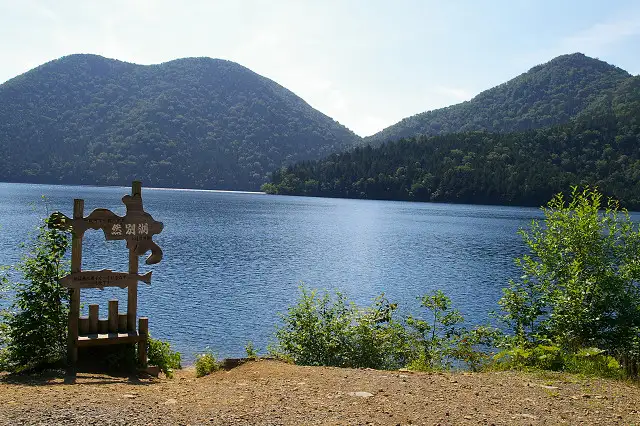
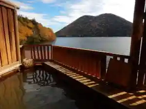
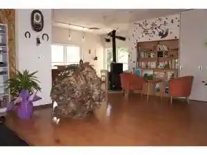
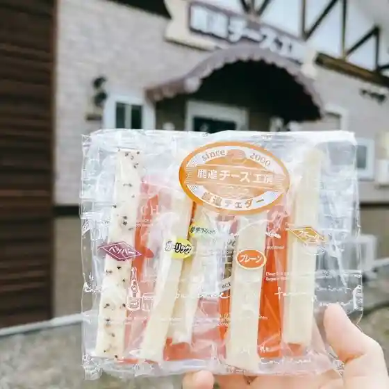
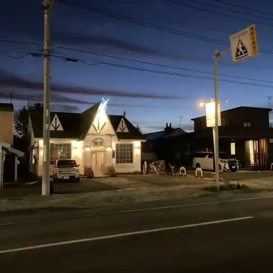
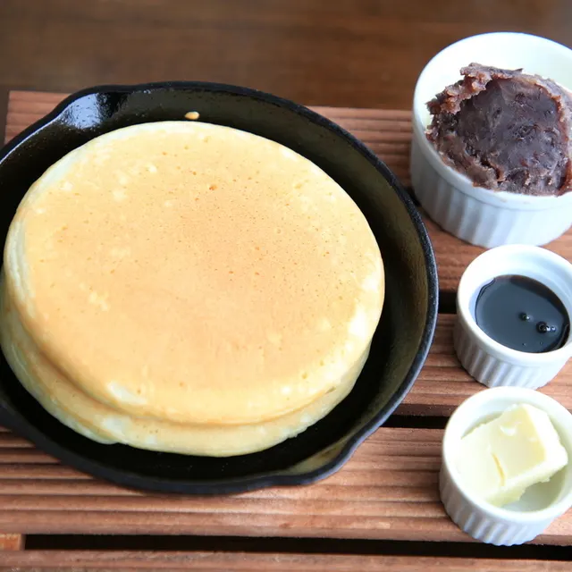
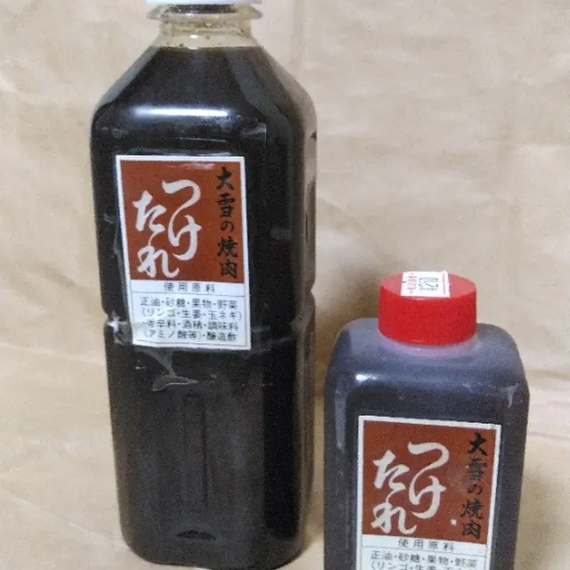
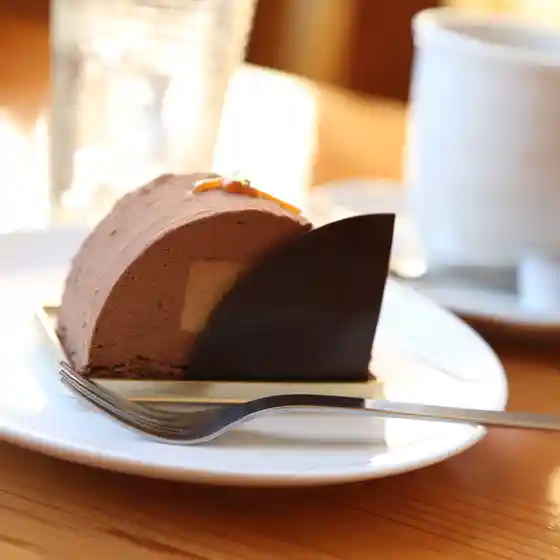
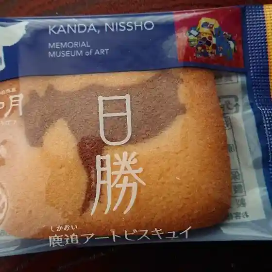
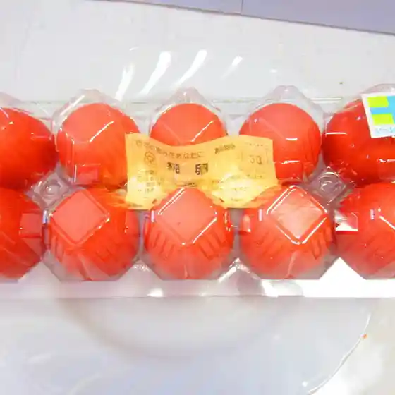

Shikaoi
Shikaoi · Hokkaido
Shikaoi
Highlighted on the Hokkaido map.

Stay
然別湖畔温泉ホテル風水

Shikaribetsuko Aze Onsen Hoteru Fuusui
然別峡 かんの温泉

Shikaribetsu Kyou Kanno Onsen
Dining
鹿追チーズ工房

Shikaoi Chiizu Koubou
ホテル福原

Hoteru Fukuhara
まるよし

Maruyoshi
カフェ ムバンチ

Kafe Mubanchi
肉の大雪

Niku No Ooyuki
お菓子のアトリエ しかおい roku.

O Kashi No Atorie Shikaoi Roku .
神田日勝記念美術館売店

Kanda Nisshou Kinen Bijutsukan Baiten
北養鶏場

Kita Youkei Ba
大阪屋
Oosaka Ya
長沢豆富店
Nagasawa Toufu Mise
然別湖畔温泉ホテル 風水
Shikaribetsuko Aze Onsen Hoteru Fuusui
居酒屋新町
Izakaya Shinmachi
カントリーホーム 風景
Kantoriihoomu Fuukei
笑福
Warai Fuku
平山旅館
Hirayama Ryokan
CAFEおしゃべりな写真館
Cafe Oshaberina Shashinkan
鹿追やまべ園
Shikaoi Yamabe Sono
はぜいち珈琲
Hazeichi Koohii
カフェ平成館
Kafe Heisei Kan
藤田牧場
Fujita Bokujou
カモク堂
Kamoku Dou
食事処 すぽっと
Shokuji Tokoro Supotto
くるめの里
Kurumeno Sato
三部牧場ツリーハウス
Sanbu Bokujou Tsuriihausu